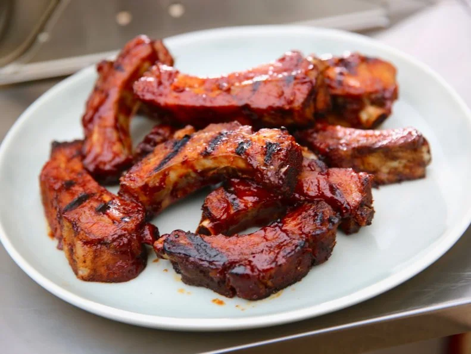

Sticky Ribs
the Odin Recipes

Description
Molly's easy ribs are extra sweet with a hint of smokiness, thanks to her simple spice rub. Bake them low and slow, then finish them on the grill for great char marks.
Ingredients
- 1/4 cup light brown sugar
- 2 tablespoons granulated sugar
- 1 teaspoon chili powder
- 1 teaspoon garlic powder
- 1 teaspoon onion powder
- 1 teaspoon paprika
- Kosher salt and freshly ground black pepper
- One 3-pound slab baby back ribs
- 2 cups BBQ sauce
Steps
- Preheat the oven to 300 degrees F.
- Combine the brown sugar, granulated sugar, chili powder, garlic powder, onion powder, paprika, 2 teaspoons salt and a generous amount of freshly ground black pepper in a small bowl (I did 30 grinds).
- Place the ribs on a piece of foil large enough to fold over and seal, then place on a baking sheet. Sprinkle the dry rub all over the top of the meaty side of the ribs. Wrap the foil around the ribs and seal tightly so that no juices can escape during baking. Bake until the meat is tender and can easily be pulled away from the bones with a fork, about 2 hours.
- Heat the BBQ sauce in a small pan over medium heat until warm. Remove the ribs from the oven and open the foil pack. Remove the ribs from the foil and pour any juices that have accumulated into the BBQ sauce and mix to combine. Continue to simmer the sauce until thickened, about 7 minutes.
- Heat a grill or grill pan for cooking at medium-high heat.
- Slice the ribs into 1-bone pieces. Brush all over with the BBQ sauce. Place the ribs on the grill and cook until grill marks appear, a few minutes on each side. Brush with more BBQ sauce and remove from the heat, then serve with the remaining BBQ sauce on the side.